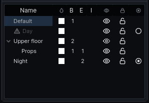

Layers
Layers organise a map: put the upper floor on one layer and hide it while working below. A layer can also be a variant: a version of the level that exists only while it is chosen, such as the same street by night. What variants are is in Layers and variants.
The Layers panel is in the right panel.

Columns
| Column | Shows |
|---|---|
| Name | the layer; double-click to rename |
| Swatch | the layer's tint; click to change it |
| B, E, I | how many brushes, entities and prefab instances it holds |
| Eye | click to cycle visible → ghosted (faded) → hidden |
| Lock | locks the layer: nothing on it can be picked or selected, so it cannot be changed by accident. Locking it lets go of whatever on it was selected |
| Variant | on variant layers only: filled for the one in effect; click another to switch |
A variant that is not baked, or whose bake is out of date, has a warning icon by its name; hover it to see which. Layers in a variant other than the one shown are greyed.
The active layer
Click a layer to make it active. New cube and arch brushes land on the active layer; other new objects land on the default layer.
To move objects onto a layer, select them and press L for the active layer (unless that is the default layer), or right-click a layer and choose Move Selection to Layer.
Arrange layers
- Click the + by the panel's title to add a layer.
- Drag a layer onto another to put it inside; drag between two to reorder.
- Right-click a layer for Rename, New Layer Inside, Move to Top Level and Delete Layer. Deleting a layer moves its contents to the default layer.
Hiding a layer hides the layers inside it too, and lets go of whatever on it was selected. What is on a hidden layer cannot be picked in the views; locking a layer locks the layers inside it as well.
Variants
- Right-click a layer and tick Variant (baked on its own).
- Put what belongs only to that version of the level on it, or on layers inside it.
- Click its variant marker, or right-click → Show This Variant, to switch to it.
Choosing a layer that belongs to another variant switches to that variant, so what you draw next is visible.
Each variant is baked on its own: a bake lights the variant in effect. See Lighting.